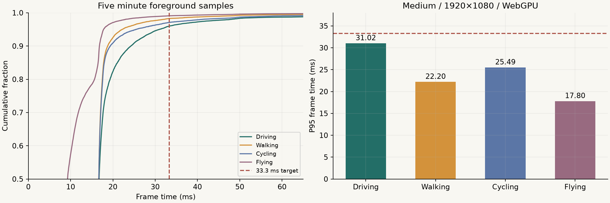
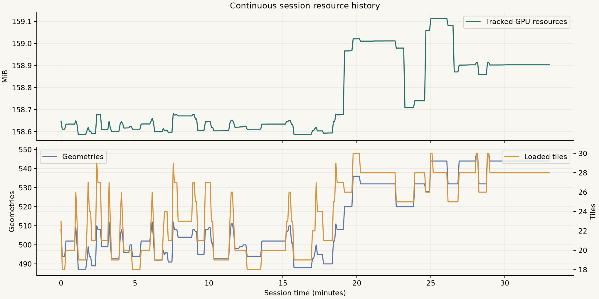
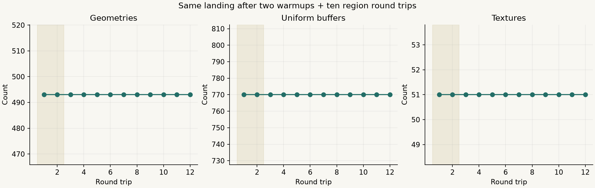
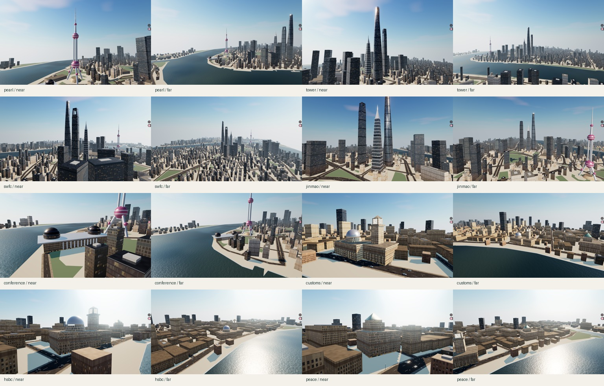
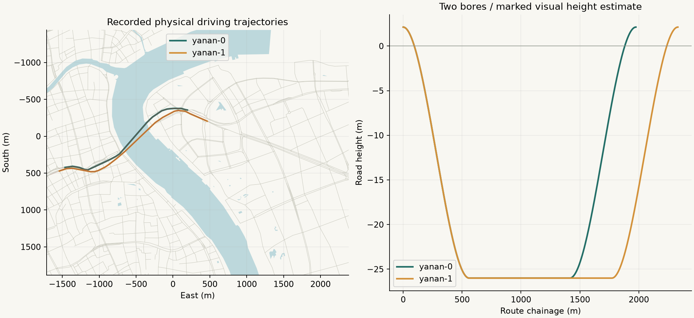

SHANGHAI WATERFRONT · 0.1.0
外滩—陆家嘴验收记录
四种漫游、8个地标、延安东路隧道连续双向驾驶。参考机：Apple M2 Pro / 16 GB，Tabbit Chromium154，WebGPU，中档1920×1080 / DPR1。
核心技术检查已执行并通过。源缓存的普通道路方向／桥隧层级仍有缺口，最终人工美术验收待用户核对截图。完整报告与保留项
打开本地漫游 机器可读汇总 32个控制点 静态包审计
汽车 · 360.47s31.02 msP95 / 目标 ≤33.3ms
步行 · 301.03s22.20 msP95 / 目标 ≤33.3ms
骑行 · 301.03s25.49 msP95 / 目标 ≤33.3ms
直升机 · 301.00s17.80 msP95 / 目标 ≤33.3ms
冷启动导航到可操作中位数 1.92秒；连续运行 33.03分钟 无应用错误；两个方向各至少3段完整驾驶录像。
性能与资源



正式性能采样不带录屏。高频CDP录屏曾造成夜间P95=65.04ms；停录后恢复，压力数据已保留于报告。渲染资源统计不等于全部浏览器显存。
固定机位 · 18张原始截图
地标近景与远景

四模式操作
步行、汽车、骑行、飞行：移动、三相机和停止。正式五分钟性能采样单独记录，不从录像帧率推算。
双向连续驾驶
浦西→浦东 · 黄昏 · 173.95秒 原始轨迹
浦西→浦东 · 白天 · 159.78秒 原始轨迹
浦西→浦东 · 夜间 · 159.88秒 原始轨迹
浦东→浦西 · 黄昏 · 240.79秒 原始轨迹
浦东→浦西 · 白天 · 138.56秒 原始轨迹
浦东→浦西 · 夜间 · 136.03秒 原始轨迹
真实布局与轨迹

控制点叠合图 独立坐标／接缝审计 道路清单 地标清单